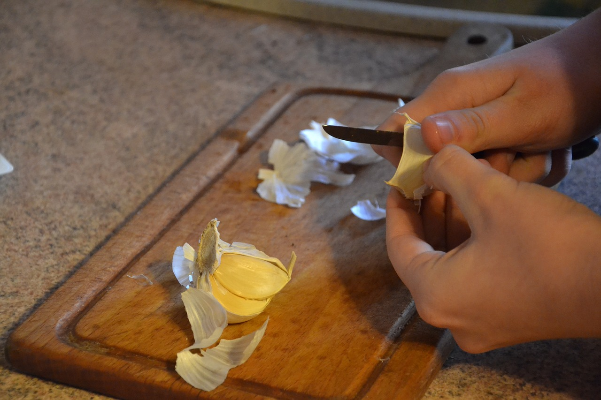

Si te apasiona el mundo de la cocina y deseas aprender a cocinar como un verdadero Chef profesional, primero necesitarás
conocer esos pequeños trucos y tips de cocina aparentemente tontos, pero que luego te permitirán cocinar mucho mejor y más
rápido.
Por eso, desde nuestra pagina recetas faciles queremos darte estos consejos y trucos de cocina útiles que te
harán la vida más fácil y que podrás usar tanto si ya eres un experto, como si eres un principiante en la cocina que
aún no sabe ni freír un huevo.

Quitar el olor de ajo de las manos
Seguro que siempre que pelas ajos se te queda el olor pegado en las manos.
Pero si quieres resolver este problema, cuando termines con los ajos, frótate
las manos debajo del agua con una superficie de acero inoxidable durante 30 segundos y verás como desaparecerá el olor a ajo.
La limpieza debe ser progresiva
Si esperas al final para limpiar vas a encontrarte con una buena pila de platos y utensilios.
Esto puede quitarte las ganas de seguir cocinando así que, lo más práctico, es ir limpiando sobre la marcha.
Quitar el olor a los tupper de plástico
Cuando un tupper de plástico ha cogido olor fuerte de algún alimento, solo tienes que rellenarlo
con papel de periódico arrugado, luego lo cierras con la tapa un par de días y verás como el olor desaparece.
Tener al menos 2 tablas diferentes para cortar
En la cocina es fundamental utilizar varias tablas de corte, una tabla para carnes y pescados crudos y
otra para verduras y frutas, y de este modo evitarás la contaminación cruzada.